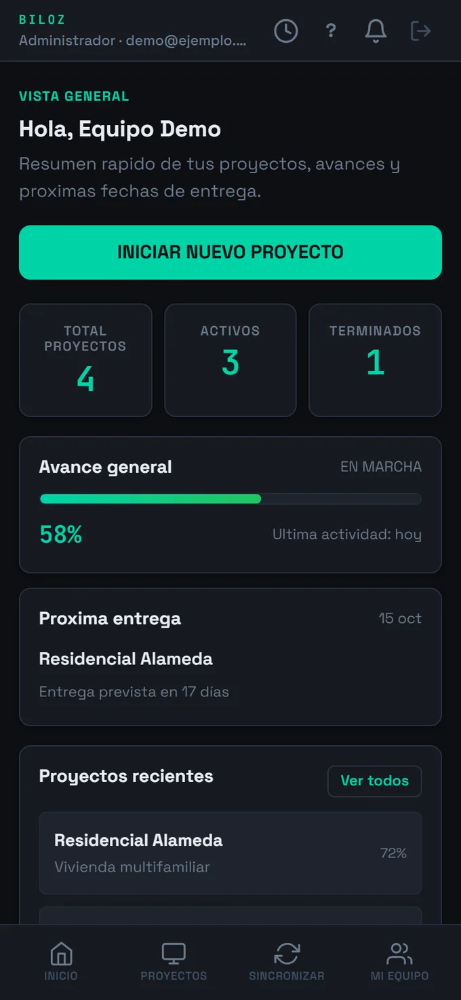

Proyectos y etapas
Cada obra con sus etapas, hitos y responsables. Visibilidad clara de dónde está parado cada frente.
Producto propio · VersaBold
Biloz reúne proyectos, etapas, tareas, solicitudes de materiales, libro de obra, fotos y equipo en una sola app. Trabaja desde el campo con o sin internet, y la dirección ve todo en tiempo real.
Pedir demo por WhatsApp ↗Antes de Biloz
El equipo de campo pierde tiempo buscando qué toca hacer. La dirección pide reportes que llegan tarde o nunca. Los materiales se piden mal, se duplican o se olvidan. Cuando algo falla, nadie puede rastrear qué pasó, cuándo ni por qué.
LA SOLUCIÓN
Biloz es una app web y móvil que corre en cualquier teléfono Android y en cualquier navegador. Está pensada para operar offline-first: el equipo captura todo en el momento, y Biloz sincroniza en cuanto vuelve la señal.

Cada obra con sus etapas, hitos y responsables. Visibilidad clara de dónde está parado cada frente.
Asignación de tareas por rol, registro de afectaciones y bloqueos para resolver antes de que escalen.
El campo pide lo que necesita, oficina aprueba y despacha. Sin pedidos duplicados ni olvidados.
Registro cronológico de lo que pasa en obra, con fotos, notas y respaldo automático.
Cada foto queda asociada a su proyecto, etapa y momento. Buscar evidencias deja de ser una pesadilla.
Roles diferenciados: dirección, oficina técnica, jefes de obra y operarios. Cada quien ve lo que necesita.
OFFLINE-FIRST
Biloz guarda todo localmente en el dispositivo y sincroniza en segundo plano cuando vuelve la conexión. El equipo nunca queda bloqueado esperando señal, y la información no se pierde si el teléfono se queda sin red por horas.